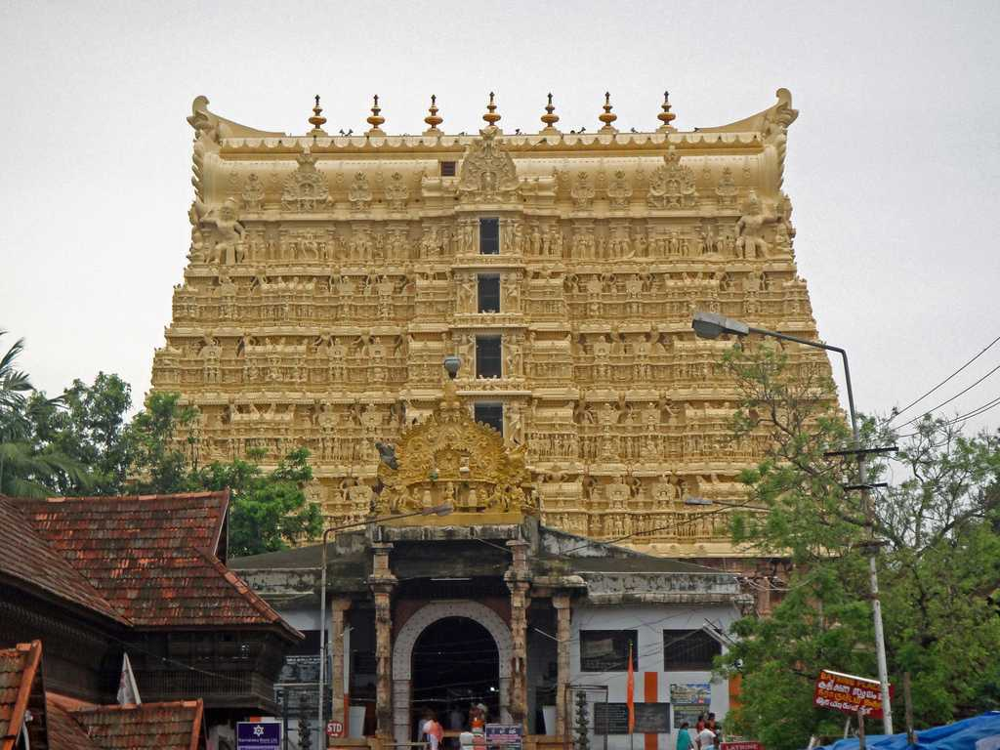
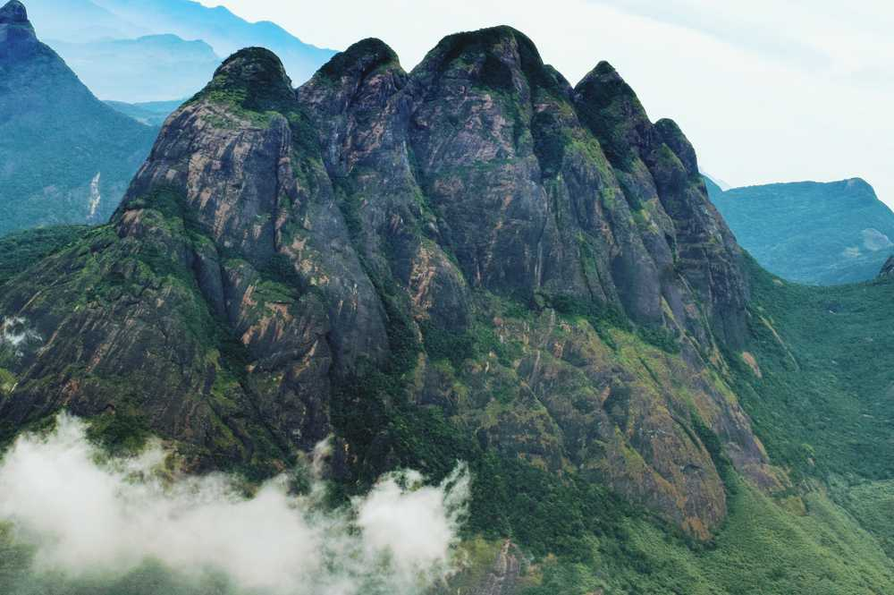

The capital city of Kerala, Thiruvananthapuram or Trivandrum is an appealing blend of a strongly rooted heritage and a nostalgic colonial legacy. Built upon seven hills, this city has long since left the days when it was only used by seafaring explorers behind - today, Trivandrum is a swanky metropolis with quaint urban charm and plenty of scenic places to visit. Proudly retaining its age-old cultural charm, Trivandrum offers a huge variety of sights including incredible museums, beautifully designed palaces, sacred temples and mesmerizing beaches, making the city one of the best tourist spots in South India.

Sree Padmanabhaswamy Temple
One of the 108 Divya Desams, Sree Padmanabhaswamy Temple is located in Thiruvananthapuram, the capital city of Kerala. Embellished in gold-plated covering, the temple is opened only to Hindu followers.
Neyyar Dam & Wildlife Sanctuary
Famous for its Lion and Deer Safari, Neyyar Wildlife Sanctuary is a treat for nature enthusiasts. The park houses a crocodile farm and elephant rehabilitation centre. Ask for a guided tour of the sanctuary which is quite informative.

Agasthyakoodam
Agastyakoodam, also known as Agastya Mala Peak is the second highest peak in Kerala with an extensive height of 1868 metre. Located within the premises of Neyyar Wildlife Sanctuary, Agastyakoodam is part of the Agasthyamala Biosphere Reserve and boasts of surreal natural beauty.
Thiruvananthapuram, or Trivandrum, has an ancient history dating back to its trading days since around the 1000 BCE, with King Solomon’s arrival. In the early days, the city was ruled by the Ays, and then the rulers of Venad, until 1745 when King Marthanda Varma made Trivandrum the capital of the princely state of Travancore. The city had a flourishing intellectual and artistic circle, especially during the reign of Maharaja Swathi Thirunal and Maharaja Ayilyam Thirunal, which is considered as the golden age of the city. The city was not under direct British rule and during the 20th century, it played an important role in India’s freedom struggle hosting meetings by the Indian Nation Congress. Following India’s independence in 1947, Travancore chose to join the Indian union.